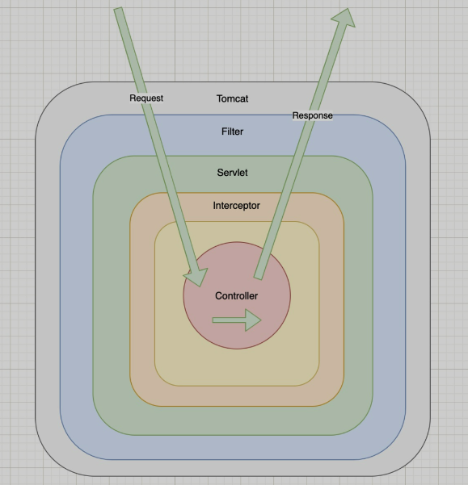

拦截器与过滤器的区别
拦截器与过滤器的区别
底层思想是什么？
拦截器与过滤器都是基于AOP面向切面编程的思想来实现的。
两者有什么相同，有什么不同？
相同点：都可以对请求做出统一的处理，例如在方法调用前进行一些操作，在方法调后后处理一些操作
不同点：
- 拦截器是Spring提供的（
org.springframework.web.servlet.HandlerInterceptor），而过滤器是Servlet提供的（java.servlet.*） - 触发时机不同，过滤器在请求到达Servlet前被拦截开始执行，拦截器在到达Controller前被拦截开始执行
- 实现不同，过滤器基于方法回调实现，而拦截器是基于动态代理（底层反射）实现
- 支持的项目不同，过滤器只能在Web项目中用，拦截器可以在Swing，Application中都能用
- 使用场景不同，因为拦截器更接近业务系统，所以拦截器主要用来实现项目中的业务判断的，比如：登录判断、权限判断、日志记录等业务。而过滤器通常是用来实现通用功能过滤的，比如：敏感词过滤、字符集编码设置、响应数据压缩等功能。
为什么使用他们？
在我们的日常业务中，我们总有一些通用但又不涉及核心业务的需求，比如日志管理，权限管理，敏感信息排查等，如何将这部分内容抽取出来，而不侵入核心代码，并可以做到灵活的扩展。就可以使用拦截器或者过滤器，但他们应用场景是不同的。
FIlter
如何进行使用？
@Component
@WebFilter(urlPatterns = "/*")
public class filter implements Filter {
@Override
public void init(FilterConfig filterConfig) throws ServletException {
System.out.println("过滤器：执行 init 方法。");
Filter.super.init(filterConfig);
}
@Override
public void doFilter(ServletRequest servletRequest, ServletResponse servletResponse, FilterChain filterChain) throws IOException, ServletException {
System.out.println("过滤器：开始执行 doFilter 方法。");
// 请求放行
filterChain.doFilter(servletRequest, servletResponse);
System.out.println("过滤器：结束执行 doFilter 方法。");
}
@Override
public void destroy() {
System.out.println("过滤器：执行 destroy 方法。");
}
}生命周期是怎么样的？
Filter有三个需要实现的方法：init,doFilter,destroy
当Web服务启动时，就会调用 init 方法，
当请求进入时，在进入Controller之前就会被 doFilter 拦截到，然后判断是否后面还有拦截器，如果没有了，则执行业务方法，执行完业务方法，返回后，会回到 doFilter方法，再进行其他操作。这里需要注意：当最后一个Filter的 filterChain.doFilter(servletRequest, servletResponse); 被调用完后，数据已经被渲染到页面了，然后才操作的下面的处理。
Web服务结束时，destroy() 被调用。
如何控制Filter的拦截顺序，以及doFilter() 方法先后是如何执行的？
方法1：在web.xml中控制filter-mapping的位置来控制的，放在上面的会比放在下面的先执行，如下“用户登录检查过滤器”会比“接口日志过滤器”先执行
<!-- 用户登录检测过滤器 -->
<filter>
<filter-name>UserLoginFilter</filter-name>
<filter-class>net.tfgzs.demo.filter.UserLoginFilter</filter-class>
</filter>
<filter-mapping>
<filter-name>UserLoginFilter</filter-name>
<url-pattern>/*</url-pattern>
</filter-mapping>
<!--接口日志过滤器-->
<filter>
<filter-name>ApiLog</filter-name>
<filter-class>net.tfgzs.demo.filter.ApiLog</filter-class>
</filter>
<filter-mapping>
<filter-name>ApiLog</filter-name>
<url-pattern>/*</url-pattern>
</filter-mapping>方法2：在@WebFilter中并未找到排序的方法，可以通过Filter的文件名来控制，比如：
- 在同一个包下，aFilter > bFilter
- 在不同包下，a/a.Filter > a/b.Filter > b/a.Filter
当请求经过多个Filter时，在操作filterChain.doFilter(servletRequest, servletResponse);前后调用的顺序

这里需注意：在最后一个Filter的doFilter的filterChain.doFilter(servletRequest, servletResponse);调用完后数据就返回页面了，然后才开始操作后面的操作。
Interceptor
如何使用？
@Component
public class Interceptor implements HandlerInterceptor {
@Override
public boolean preHandle(HttpServletRequest request, HttpServletResponse response, Object handler) throws Exception {
System.out.println("[ Interceptor ]：执行 preHandle 方法。");
return true;
}
@Override
public void postHandle(HttpServletRequest request, HttpServletResponse response, Object handler, ModelAndView modelAndView) throws Exception {
System.out.println("[ Interceptor ]：执行 postHandle 方法。");
}
@Override
public void afterCompletion(HttpServletRequest request, HttpServletResponse response, Object handler, Exception ex) throws Exception {
System.out.println("[ Interceptor ]：执行 afterCompletion 方法。");
}
}@Configuration
public class AppConfig implements WebMvcConfigurer {
@Autowired
private Interceptor interceptor;
@Autowired
private Interceptor1 interceptor1;
@Autowired
private Interceptor2 interceptor2;
@Override
public void addInterceptors(InterceptorRegistry registry) {
registry.addInterceptor(interceptor)
.addPathPatterns("/*");
registry.addInterceptor(interceptor1)
.addPathPatterns("/*");
registry.addInterceptor(interceptor2)
.addPathPatterns("/*");
}
}生命周期
和Filter 是类似的，先顺序执行preHandle，再逆序执行postHandle，所有执行完后，逆序执行afterCompletion方法。
这里注意：最后一个preHandle处理完后，开始执行业务，在执行postHandler前， 页面就已经被渲染了。也就是Controller返回数据后执行：this.returnValueHandlers.handleReturnValue(returnValue, this.getReturnValueType(returnValue), mavContainer, webRequest);。
如何控制拦截器的执行顺序
在WebMvcConfigurer配置类中，按照注册的顺序执行。
总结
- 当同时使用拦截器与过滤器时，请求模型：
